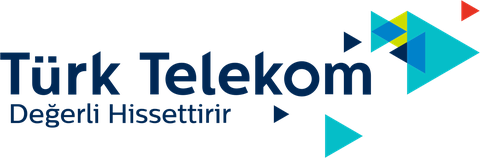
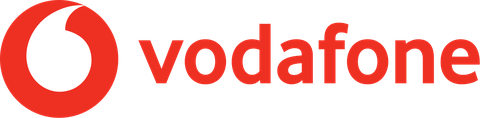
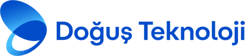
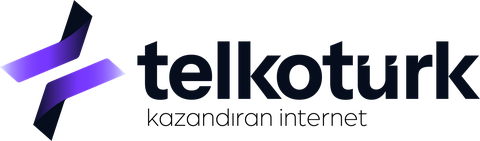
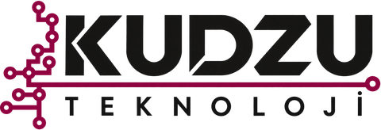

Misyon
Neden buradayız
Kurumların yasal yükümlülüklerini zahmetsizce yerine getirmesini sağlayan güvenilir yazılımlar geliştirmek ve kullanıcıların bağlandıkları ağları bilinçle kullanmasına katkıda bulunmak.
Kurumlara güvenilir altyapılar kuruyor, bu altyapıların nasıl çalıştığını da herkese sade bir dille anlatıyoruz.
Kimiz
KareCode Dijital Servisler ve Yazılım Hizmetleri A.Ş.; kurumlara özel yazılımlar geliştiren, mevcut uygulamaları modernize eden ve kendi ürünlerini tasarlayan bir teknoloji şirketidir.
Web, mobil, bulut, SaaS ve masaüstü uygulamalarında çalışıyoruz. KCLogger, İki Faktörlü Doğrulama ve Bulut Yedekleme bu birikimden doğan kendi ürünlerimizdir.
Küçük işletmelerden kurumsal yapılara kadar her müşterimize aynı özeni göstermeye, denetime hazır altyapılar sunmaya çalışıyoruz.
Misyon
Kurumların yasal yükümlülüklerini zahmetsizce yerine getirmesini sağlayan güvenilir yazılımlar geliştirmek ve kullanıcıların bağlandıkları ağları bilinçle kullanmasına katkıda bulunmak.
Vizyon
Güvenliğin karmaşık bir teknik konu olmaktan çıkıp herkesin anlayabildiği gündelik bir alışkanlığa dönüştüğü bir dijital ortama katkı sunmak.
Çalışma ilkeleri
Ürünlerimizin neyi kaydettiğini, neyi kaydetmediğini açıkça anlatırız. Kullanıcı da neyin kayıt altına alındığını bilmelidir.
Güvenlik yalnızca yazılımla sağlanmaz. Bu konuları herkesin anlayacağı dille anlatmayı işimizin parçası sayarız.
Araçlarımızın yasal çerçevede, yalnızca yetkili kişilerce kullanılmasını savunur; gereğinden fazla veri toplanmasına karşı dururuz.
Yolculuk
Tarihler yerine aşamalar; her biri bir öncekinin üzerine kuruldu.
Misafir ağı sunan kurumların 5651 kayıt yükümlülüğü için kendi ürünümüzü geliştirdik.
İki Faktörlü Doğrulama ve Bulut Yedekleme ile güvenlik ürünlerimizi genişlettik.
Bornova'daki genel merkezimiz ve Gebze Bilişim Vadisi'ndeki şubemizle çalışıyoruz.
Partnerler
Altyapıdan yazılıma, iş birliği yaptığımız kurumlarla uçtan uca güvenilir çözümler sunuyoruz.





Tanışalım
İhtiyacınızı dinleyelim, en uygun çözümü birlikte belirleyelim.